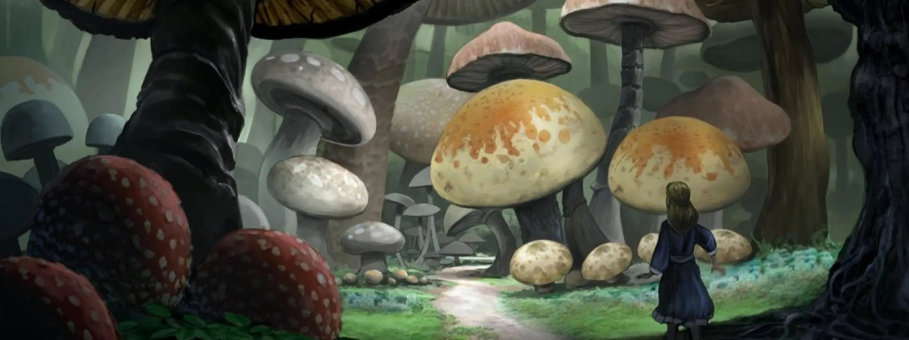
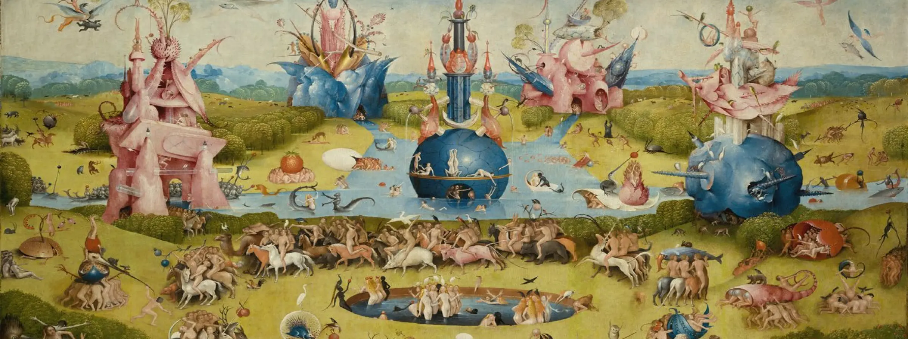

История | Грибы Грибы в искусстве: влияние на литературу, живопись и музыку
История | Грибы Грибы в искусстве: влияние на литературу, живопись и музыкуСтатьи История | Грибы Грибы в искусстве: влияние на литературу, живопись и музыку
 Грибы в искусстве: влияние на литературу, живопись и музыку
Грибы в искусстве: влияние на литературу, живопись и музыку 
Многовековая история взаимодействия человечества с грибами отразилась в культуре и искусстве. В этой статье мы проследим влияние грибов от литературных произведений до фантастических работ современных художников.
Грибы часто вдохновляют литературу и искусство, появляясь в произведениях таких авторов, как Артур Конан Дойл и Дэвид Герберт Лоуренс. В рассказах и книгах их герои сталкиваются с грибами, вызывающими галлюцинации, а также ассоциируются с фантастическими существами, как гномы и феи.
«Алиса в стране чудес» Льюиса Кэрролла — классическое произведение, где грибы играют важную роль в метаморфозах героини. Взаимодействие Алисы с гусеницей, сидящей на грибе и предлагающей его различные части, можно трактовать как аллюзию на воздействие мухомора.
Современные писатели, как Сью Графтон и Робин Кук, также находят вдохновение в грибах, описывая ядовитые виды и их воздействие на человека. Такие произведения подчеркивают важность грибов в литературе и искусстве, их роль как символов и источников фантазии.
С 1960-х годов грибная тематика начала активно проникать в музыкальную культуру, вдохновляя множество артистов. Например, уже в 1904 году Игорь Станиславский исполнил песню «Как грибы на войну собирались», в которой рассказывается история о сосновом грибе, призывающем к бою различные отряды грибов.
Известный композитор Джон Кейдж высказал мнение, что можно многое узнать о музыке, посвятив себя грибам, а его работам сильно повлияло увлечение микологией. Также чехословацкий композитор Вацлав Халек создавал прекрасные звуковые пейзажи, вдохновляясь грибами, которые он находил в лесу, и записывая музыку, звучавшую в его воображении.
Грибы являются древней темой, вдохновлявшей художников на протяжении истории. Они имели влияние на различные аспекты искусства, начиная от психоделической эры 60-х, когда грибы вызывали творческое видение, и до находок изображений грибов в искусстве Средневековья.
Символика грибов видна даже в христианских картинах, таких как «Сад земных наслаждений» Иеронима Босха, где изображен красный мухомор. Сложность символизма этой картины окутывалась множеством научных интерпретаций, однако одной из возможных трактовок считается связь гриба с искушением человека изменять свое сознание с помощью психотропных веществ.
В последние годы интерес к изображению грибов в искусстве растет, так как они символизируют как начало жизни, так и смерть. Выставка в Лондонском музее Wellcome, под названием «Укоренившиеся существа», объединила коллекции грибов и работы художников, чтобы показать связь человека с окружающей средой и экологический кризис.
Некоторые художники, такие как Сяоцзин Янь и Джэ Рим Ли, используют грибы для проектов, связанных с продлением жизни и бессмертием. Они создают скульптуры из мицелия и грибов, а также погребальный костюм, способный превратить тело умершего в мицелий.
Другие художники, вроде Маурицио Монтальти и Нур Мобарак, исследуют тему разложения через грибы в искусстве, что вызывает интерес к экосистемам и новым технологиям. Эти проекты позволяют художникам исследовать новые возможности в области искусства, архитектуры и биотехнологий.
Другие статьи

Поделиться


 также
также
Грибы-крылышки ангела — это удивительные грибы с неоднозначной репутацией своей съ...

Узнайте, как вести себя в походе
безопасно для себя и природы...

Узнайте, где найти правильную одежду
для дождливой тихой охоты...